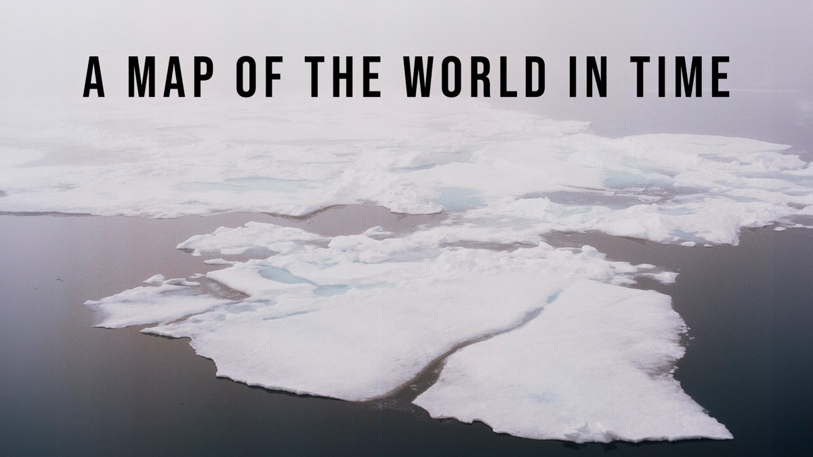
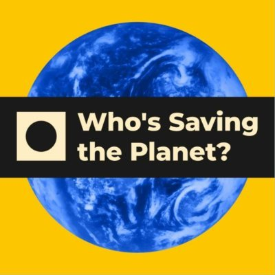

2023-Present
AGU Paleo2 Early Career Working Group
Member of the AGU Paleoceanography and Paleoclimatology early career scientist group.
Member of the AGU Paleoceanography and Paleoclimatology early career scientist group.
Chaired "Oxygenation Dynamics in Past Oceans" at AGU Fall Meeting 2024.
Served on DEI committee focused on inclusive practice and climate in geoscience training.
Supported undergraduate students through graduate-undergraduate inclusive development programming.
Served on the College of Earth, Ocean, and Atmospheric Sciences Association of Graduate Students.

BADEX expedition film featuring field and shipboard work.
Watch on Amazon →
Conversations with climate-tech leaders working on sustainability and planetary-scale solutions.
Listen on Spotify →